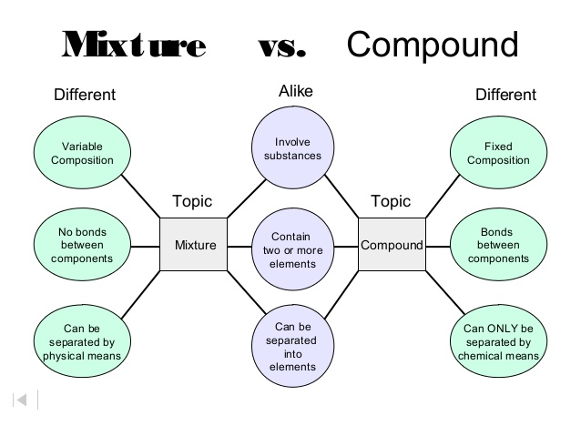

HOME
Differentiate between compound and mixture
Objectives
1. To understand the difference between compound and mixture
2.To understand about change in property of elements when a compound is formed.
3.To understand about the separation techniques of mixture and compound
Theory
When two or more atoms of different elements combine chemically in a fixed ratio ,they form a compound.On forming compound properties of the elements gets changed .where as when two or more substances do not combine chemically but are mixed in indefinite proportion they form a mixture.Hence a compound and a mixture can be differentiated in following ways-
1. A mixture may be homogeneous or heterogeneous while a compound is always homogeneous.
2.Properties of a mixture resemble with the properties of individual components, where as the properties of a compound are totally different from the constituents.
3. The different components of a mixture can easily be separated by physical means where as it is not possible in case of a compound.

PROCEDURE:
Observe the video and write the preliminary observations-
Colour of sulphur powder _________
colour of iron filiings ___________
colour of Iron and sulphur on mixing ________
Colour of the product on heating Iron and Sulphur _________
OBSERVATION TABLE-
Fill the observation Table -
| S.No | Activity observed | observation | Inference |
| 1. | Moving a magnet on grey mixture of Iron and sulphur | Attracted/not attracted | |
| 2. | Moving a magnet on the product obtained by heating Iron and sulphur | Attracted/not attracted | |
Do you want to try and see whether the components mixed on heating Fe and S ,can they be separated by simple means -
Try this animation yourself-
http://www.bbc.co.uk/bitesize/ks3/science/chemical_material_behaviour/compounds_mixtures/activity/